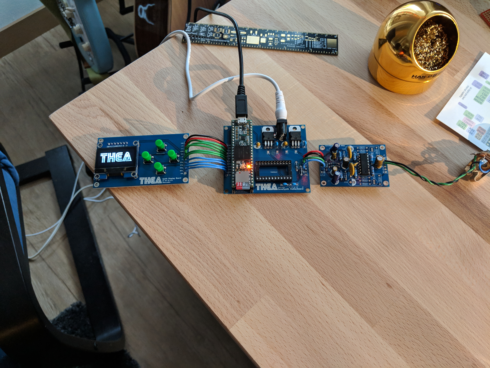
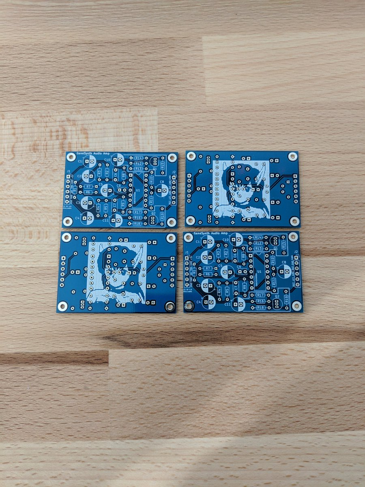

Genesynth part 4: Cleaning up the noisy audio amplifier
This is part of an on-going series on building a synthesizer. Catch part 1, part 2, and part 3 if you missed them.
In a previous post I talked about getting a proper audio amplifier created for my Sega Genesis-inspired synthesizer.
Unfortunately, I ran into some trouble with my build. As mentioned, I had a real problem with noise. Specifically, the noise issues I was having were due to the fact that the digital electronics, such as the display and the microcontroller, where sharing a supply and ground path with the analog electronics, most specifically the audio amplifier. It also didn't help that everything was hand-wired onto protoboards.
This introduced high-frequency ripples in the power supply as the display and microcontroller did their work. This power supply ripple would bleed into the audio. Take a listen to this clip - during the "quiet" periods you can hear a distinct noise floor (headphones recommended):
I was determined to get rid of this for the final version.
Methods of reducing digital noise
After searching through various forums and such I discovered there are a few different strategies you can use isolate noisy digital electronics from sensitive analog components.
One of the biggest pieces of elder knowledge is to use "split" ground planes. That is, separate your return paths (grounds) for digital and analog, and only let them join at one point. Texas Instruments has a great article about this. However, I did get some conflicting advice here. It seems in many applications it's not actually totally necessary to physically split the ground planes. Simply giving the digital components enough space to reach ground in an isolated fashion can be enough for some circuits- that is to say, push all the digital stuff to one side of the board and all analog stuff to the other side and don't cross-wire grounds.
Another recommendation is to tie the analog parts to ground using an inductor, which effectively creates a low-pass filter on the power supply. This approach seems to be taken quite often as I found lots of schematics that included inductors in the power supply.
Finally, there's the option of using separate supplies for the analog and digital sections. Effectively, you can use two separate voltage regulators for the digital and analog sections.
Methods used for Genesynth's audio board.
For this project, I chose to do three separate things to reduce noise:
- Move everything to printed circuit boards (PCBs). I had never done PCBs before, but this project seemed simple enough from a schematic point of view to give it a shot.
- Use separate supplies for analog and digital sections. Since I had been using USB power, that means I also had to switch my project to using an wall wart power supply as I wouldn't have enough voltage after regulation if using 5v USB power.
- I decided against split ground planes. You'll see later in the PCB pictures, but I found that just having the digital components far enough away from the analog side of things was enough for ground isolation.
Designing the PCBs
I designed Genesynth using three separate PCBs: A motherboard, an audio board, and a display board.

The motherboard contains the voltage regulators used to provide the separate supplies. Take a look:

U3 and U4 are the two regulators. U3 is for the digital side of things, and U4 is for the analog side of things. C1 and C3 act as filter capacitors for the digital regulators and C2 and C4 perform the same role for the analog one. Both get their unregulated voltage from the 9v power jack. For this project, I'm using LD1117v50 low drop-out 5v regulators, but really any regulators that can handle turning 9v to 5v would work fine.
Another thing to note is the position of the regulators. Notice that the digital regulator is located near the microcontroller on the left. It also supplies power to the display which is connected to the pins on the left. The analog regulator is on the right and more or less makes a direct jump to the pin connectors on the right side that connect to the audio amplifier board. This means the return path for digital grounds won't cross any of the analog return paths, reducing the necessity to have a split ground plane.
Here's the audio board:

There's nothing special about the audio board, really. It just gets all of its power and inputs from the left side and has its outputs on the right side. The separate regulator and layout of the motherboard seems to provide this board with a very clean power supply. Having an isolated audio amplifier is super useful - I was able to test it for noise independently of the motherboard.
Results
Other than a few hiccups with a bad capacitor on the motherboard, this worked out extremely well. The audio amplifier is dead silent when idle and provides crystal clear audio from the synthesizer chip. You can even distinctly hear the characteristic artifacts and distortion from the YM2612's 9-bit DAC. Take a listen to this clip:
This also meant the synth output was clean enough to run through some analog guitar pedals:
Here's a video of the final sega synth hardware running through my analog pedalboard.
— Thea Flowers 🌺 (@theavalkyrie) October 29, 2018
It sounds *amazing*. Listen to that 16-bit core/9-bit DAC glory.
(The crackles and pops are from OBS, no idea why it's doing that) pic.twitter.com/DVfBVADInw
It's so awesome!
More resources
The schematics as well as the PCB files are on GitHub. Feel free to dig through them for useful stuff. Remember, I am totally not an expert here - I'd love feedback or comments on how I can do better.
At some point, I plan to either do a blog post or video on actually designing and getting PCBs printed. Let me know if you're interested in this!